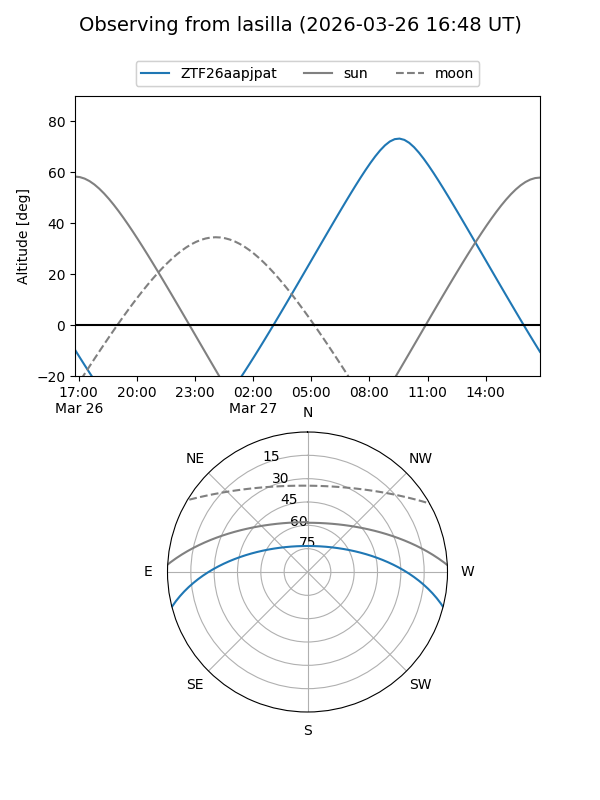
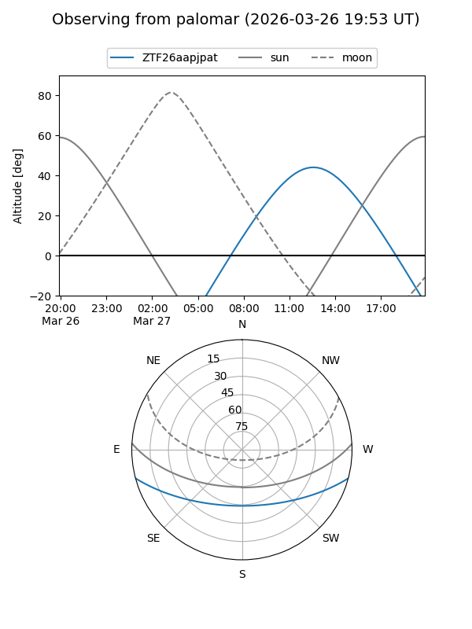

ZTF26aapjpat
Target ZTF26aapjpat at 2026-03-26 13:41
Aliases and brokers:
FINK: link
Lasair: link
ALeRCE: link
alt names
ZTF26aapjpat (ztf,fink_ztf)
Coordinates:
equatorial (ra, dec) = 256.3263,-12.49781
equatorial (HMS+DMS) = 17:05:18.30,-12:29:52.10
galactic (l, b) = (8.7915,+16.82657)
Flags:
Photometry:
last ztfg=17.12
1 ztfg detections
Lightcurve
Visibility


Additional plots